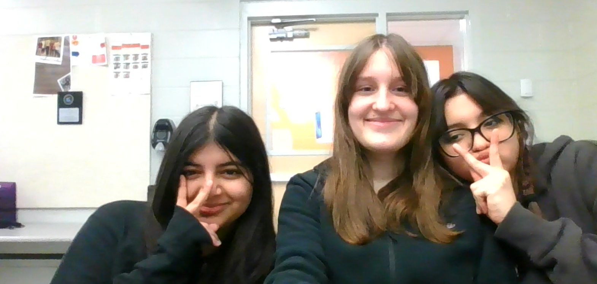

My name is Audrey. This is my first webpage!
This paragraph is about what I like, I enjoy hanging out with my friends spending time with them is all I like to do on my free time. I enjoy making them laugh because it just makes me feel their warmth throught that form. My closets friends have been with me since middle school which is a record for me, they've know each other far long than I have. I'm very happy I get to go to this school with them and even share a class or two each year. Without school being in the way I'm able to spend time with them out of school.
This second paragraph is about what I dislike, I don't enjoy spending time with my father because hes very frustrating to talk to. I don't like doing long activities in big bodies of unfamiliar areas such as a forrest and the ocean because not having familiar surroundings makes me uncomfortable. I dislike being in the heat for a long period of time opposed to the cold, I don't have a constant way to cool myself down. I don't like it when people name their pets based off appearance, its very uncreative.
